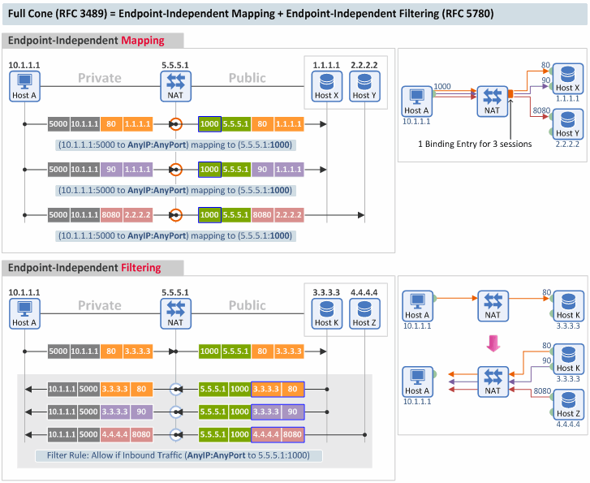
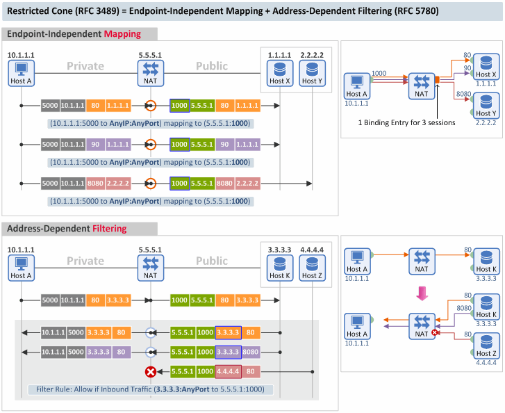
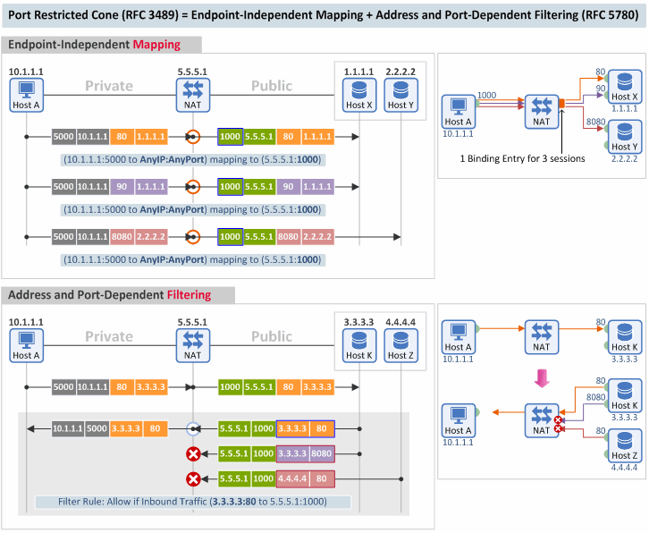
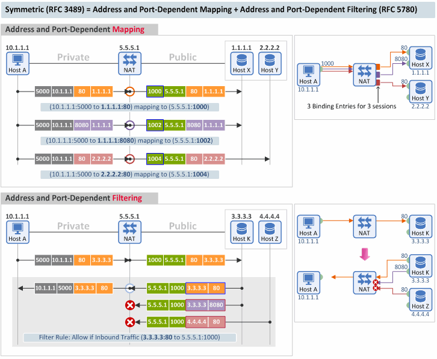
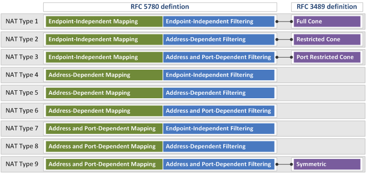

STUN (RFC 3489) vs. STUN (RFC 5389/5780)
October 21, 2013 | By Netmanias (tech@netmanias.com)
What are the differences between NAT types defined in RFC 3489 and RFC 5780?
To understand the differences to be explained below, you must be familiar with the Mapping Behavior and Filtering Behavior of a NAT that we covered last time.
What is STUN?
STUN is a protocol that allows two devices (P2P devices) to discover the presence and types of a NAT between them, and to find out what External IP address and Port are to be replaced by the NAT, for P2P communication between the two devices.
STUN was first defined in RFC 3489 (standards) back in 2003, and then revised two times once in RFC 5389 (standards) in 2008 and again in RFC 5780 (experimental) in 2010.
According to RFC 5389, "classic STUN's algorithm for classification of NAT types (defined in RFC 3489) was found to be faulty, as many NATs (available in the market) did not fit cleanly into the (four) types defined there."
To resolve this problem, classic STUN was modified in RFC 5389 (i.e. to add attributes to Binding messages). And in RFC 5780, NAT types were re-defined and the algorithm (method) for classification of NAT types was modified.
Both RFC 3489 and 5389 use the same term "STUN", but in two different meanings as follows:
- RFC 3489: STUN - Simple Traversal of User Datagram Protocol (UDP) Through Network Address Translators (NATs)
- RFC 5389: Session Traversal Utilities for NAT (STUN)
NAT Types Defined in RFC 3489 and 5780
1. Full Cone
|
[Mapping Behavior] A full cone NAT is one where all requests from the same internal IP address and port are mapped to the same external IP address and port. [Filtering Behavior] Furthermore, any external host can send a packet to the internal host, by sending a packet to the mapped external address. (RFC 3489)
|
|
A full cone NAT in RFC 3489 corresponds to a NAT that uses Endpoint-Independent Mapping ("EIM") and Endpoint-Independent Filtering ("EIF") in RFC 5780.
- Mapping Behavior: The NAT translates any outbound packets with the same (1) source IP and (2) source port into the same Port Mapping value (e.g. translated Port = 1000 in the figure below), regardless of the destination IP or destination port of the packet.
- Filtering Behavior: The NAT checks only the (1) destination IP and (2) destination port of an inbound packet to decide whether to pass the packet or not. Thus, it doesn't care about the source IP or source port values of the External Endpoint.

2. Restricted Cone
|
[Mapping Behavior] A restricted cone NAT is one where all requests from the same internal IP address and port are mapped to the same external IP address and port. [Filtering Behavior] Unlike a full cone NAT, an external host (with IP address X) can send a packet to the internal host only if the internal host had previously sent a packet to IP address X. (RFC 3489)
|
|
A restricted cone NAT corresponds to a NAT that uses EIM and Address-Dependent Filtering ("ADF") in RFC 5780.
- Mapping Behavior: Same as in a full cone type
- Filtering Behavior: This NAT checks only the (1) destination IP, (2) destination port and (3) source IP of an inbound packet to decide whether to pass the packet or not. It doesn't care about the source port value of the External Endpoint.

3. Port Restricted Cone
|
[Mapping Behavior] A port restricted cone NAT is like a restricted cone NAT, [Filtering Behavior] but the restriction includes port numbers. Specifically, an external host can send a packet, with source IP address X and source port P, to the internal host only if the internal host had previously sent a packet to IP address X and port P. (RFC 3489)
|
|
A port restricted cone NAT corresponds to a NAT that uses EIM and Address and Port-Dependent Filtering ("APDF") in RFC 5780.
- Mapping Behavior: Same as in a full cone type
- Filtering Behavior: This NAT checks the (1) destination IP, (2) destination port, (3) source IP AND (4) source port of an inbound packet to decide whether to pass the packet or not.

4. Symmetric
|
[Mapping Behavior] A symmetric NAT is one where all requests from the same internal IP address and port, to a specific destination IP address and port, are mapped to the same external IP address and port. If the same host sends a packet with the same source address and port, but to a different destination, a different mapping is used. [Filtering Behavior] Furthermore, only the external host that receives a packet can send a UDP packet back to the internal host. (RFC 3489)
|
|
A symmetric NAT corresponds to a NAT that uses Address and Port-Dependent Mapping ("APDM") and APDF in RFC 5780.
- Mapping Behavior: This NAT uses the same Port Mapping value for only the packets that have the same (1) source IP, (2) source port, (3) destination IP AND (4) destination port.
- Filtering Behavior: Same as in a port restricted cone type

Summary
The figure below shows the nine NAT types defined in RFC 5780 and the four NAT types defined in RFC 3489, and how the NAT types in RFC 3489 match their counterparts in RFC 5780.
